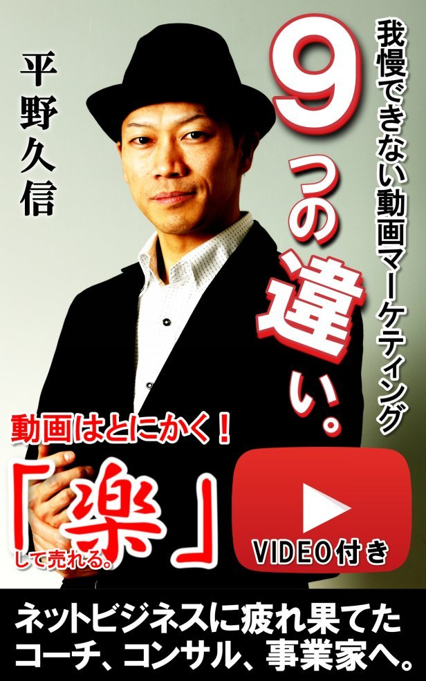
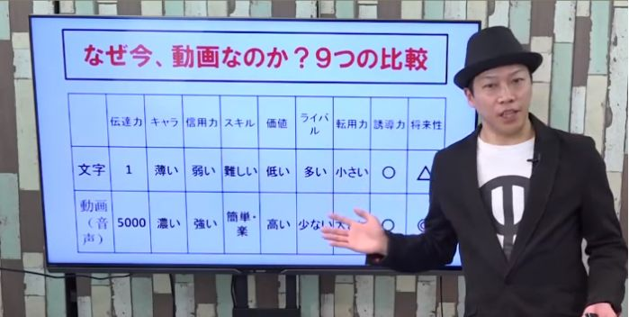

| 我慢できない動画マーケティング９つの違い: 動画はとにかく楽して売れる (電書鳩ブックス) | |
| 平野久信 | |
| (2017) | |

＜＜ はじめに ＞＞
初めまして、
著者の平野久信（ひらのひさのぶ）です。
この度は、本書を手にとってくれて
本当に有難うございます。
まず最初に確認したいこと、それは、
【本書はビデ オ BOO K 】の機能がある。
ということです。
ビデオ の UR L は、本編の最後に
記載してありますので、
映像情報で本書の内容を吸収したい方は、
こちらも合わせてご利用ください。
そして、更にこれは、
これからあなたが
「ビジネスにおける情報発信」を行う上で、
＜＜ 効率的に行動できるヒント。＞＞
になるかも知れないので
お伝えするのですが、
本書は実は、
本書の内容を話したビデオを素に
書籍として読みやすい様に、
加筆・修正をしたものです。つまり、
最初に動画。そして、次にそれを文字化。
という流れで作成しています。
繰り返しますが、本書はビデオを素に
文字化して原稿を書き上げましたので、
この電子書籍の制作に掛かった時間は、
わずか４時間です。（装丁画像ふくむ）
──────────────────
これならきっと多くの方が、
思ったよりも簡単に、しかも楽に、
電子書籍を作って発信して、ビジネスに、
サクサクと利用できると思いませんか？
私はこれまで、
・１人のビジネスプレイヤーとしても、
・約４年のコンサルタント活動からも、
動画をビジネスに正しく使えば、
＋─────────────────＋
あらゆるビジネスの売上 を" 激 増" させて、
同時に、時間的余裕も生み出す事ができる。
＋─────────────────＋
と、確信しています。
本書には、
私がクライアントに日頃から伝えている
動画の「正しいビジネス活用法」を
たっぷりと詰め込んでいます。
＜＜ 目次 ＞＞
●動画と文字９つの違いとは？
１）伝達力の違い
２）キャラクターの違い
３）信用力の違い
４）スキルの違い
５）価値の違い
６）ライバルの違い
７）転用力の違い
８）誘導の違い
９）将来性の違い
・あとがき「動画から始まる素人革命」
本編では、
上記の９つの違いに関する話はもちろん、
様々な動画の活用アイデアについても
ペラペラと豊富に語っていますので、
ぜひ、楽しみながらも、集中して、
私からの情報を受け取って欲しいです。
さらにさらに、
本書を手にして下さった方には、
そのお礼として、
本書の題材となっている、
ビジネスにおける「正しい動画の使い方」を
より具体的に、発展、応用させた
わたし独自の動画マーケティング手法
＜＜ ソーシャ ル V X 動画マーケティング＞＞
について詳しく解説した、
WE B セミナーの無料視聴権利を
もれなくプレゼントしています！
https://glocalshare.com/link/QSclDI
まずは、本編を読んでから、次に、無料で
【 WE B セミナー】をご覧になってみて下さい。
きっと、本書で得られる
沢山の「気づき」や「アイデア」を実践する為の
ノウハウや、ヒントを得ることが出来るでしょう！
それでは、あとがきでお会いしましょう。
引き続きよろしくお願いいたします！
平野久信（ひらのひさのぶ）
目次
＜＜ 本編：前提の確認 ＞＞
まず、動画の話しをするならば 、 Youtub e というメディアは絶対に外せないですね。
なぜかというと、世界中の動画メディアの中でやっぱ り Youtub e は最大手だからです。
ユーザーの数もすごく多いし、「動画 ＝ Youtub e 」という代名詞にもなっていますよね。
恐らく今ビデオをご覧になってるあなたの周りにも、日常的 に Youtub e を見ている人達って多いんじゃないですか？
お子さんかも知れないし、職場の同僚かも知れないし、お父さんお母さんかも知れないし、おじいちゃんおばあちゃんかも知れない。
それだけ動画というのは、テレビとかなり似ているせいもあってか、日本中、いえ世界中の国民に愛されているメディアなんですよ。なので、当然ながら日本も利用者は大変多いです。
201 5 年の情報で最新ではないんですが 、 Youtub e の日本の利用者数は当時 で 492 4 万人。つまり 約 500 0 万人が見ているネットメディアです。これは他のインターネットメディアと較べて、圧倒的に多いんです。
詳しい方はご存じかも知れませんけど 、 Faceboo k であれ ば YouTub e の半分ほど の 250 0 万人の利用者数って言われてますし 、 Twitte r なんか実際は同じか 、 Faceboo k より少し多いぐらいなんですよね。
ですけ ど YouTub e は、その倍ですから、相当なユーザー数な訳ですよ。
なので、「動画 ＝ Youtub e 」って言われる由縁は 、 500 0 万人の利用者と考えればですけど、日本国民の半分 、2 人 に1 人ぐらいが利用している、利用したことがある。と、言われています。つまり、動画といえば、こ の Youtub e ですから、必ず抑えておきたいとメディアだと言うことですね。
また、みなさんも知っている、検索エンジン及び、日本最大級のポータルサイト の Yahoo ! ! なんですが、そ の Yahoo! ! の年間検索ランキン グ1 位がなんと 「 Youtub e 」なんですよ。
要は 、 Youtub e 、とか、ユーチューブっていうキーワードで検索して、動画を見に行くって方が多いんだと思うんですね。これ、分かりますよね？
Yahoo! ! の検索ランキン グ1 位の言葉 が Youtub e 。それだけやっぱり 、 Youtub e にアクセスしようと思ってる方が多いという事だと思うんですけども、まあ、いわゆる動画コンサルタントっぽい、お決まりの杓子定規な話はこのくらいにしておいて、現状はそういう事です。
そして、やはりスマートフォンが普及したからこそ、こ の Youtub e のメディアが加速的に大きくなったっていうのは、もう間違いない事実なんですけども、なんと、こ の Youtub e にアクセスしている全体の６割がスマートフォンからのアクセスです。
つまり、利用者の６割が、画面の大きいパソコンではなく、もっと身近で、画面の小さなスマートデバイス で YouTub e を見ている。って事なんですね。
そして最後に、 動画は文字 の 500 0 倍の伝達力があるって話 です。
こ の 500 0 倍というのは、情報の伝達量の比較を指しています。まあ要は、文字を見て頭で理解するっていう事が「１」だとしたら、動画はそ の 500 0 倍、伝達力が強いってことですね。
例えばね、 「1 」の戦闘力の何かキャラクターがいたとして、別のもう１つのキャラクターは、 「 500 0 」の戦闘力があったとしたら、単純にどっちが強いですか？って話です。
そりゃあ当然 「 500 0 」の方が強いわけですよね。なのでここで言いたいのは、 情報の伝達力として、文字の 「 500 0 倍」の力がありますよ。という事で、ここを客観的に、まずはしっかりと理解して、動画を利用することのメリットを抑えて欲しい なと思うんです。
そして、この話を踏まえてですね、じゃあ、いよいよ９つの比較というお話になっていくわけなんですが、その項目が表の上の欄にあります。項目が９つありますね。
そして真ん中の段が【文字】、一番下が【動画（音声）】とモニターに映っていますけども、実は私の場合は、動画を音声を届けるものとしても使っていたりするんですね。
まあ、あんまり詳しく説明すると難しくなるので、音声も動画と同じように捉えてもらっていいんですけども、要は、【伝達力、キャラクター、信用力】と、この上の項目について、「文字と動画」で比較した場合、どういう特徴があるのか？どういう違いがあるのか？っていうお話をこれからして行きます。
ここまで前置きが長くなりましたが、さて準備はよいですか？
＜＜ 本書の軸となる比較画像 ＞＞

＜＜ １：伝達力の違い ＞＞
はい。じゃあまず、伝達力ですね。先ほどの話の続きになりますけども、文字が「１」だとすると、動画が「５０００」と。圧倒的な力の差があるわけですよね。
文字が「１」なら動画が「１０」じゃないんですよ。また、文字が「１」なら動画が「１００」でもないんですよ。いいですか、
文字が「１」なら動画が「５０００」ですからね！
この圧倒的なパワーの差っていうものを、まずはしっかりと認識して欲しい んですよね。
＜＜ ２：キャラクターの違い ＞＞
そして次に、キャラクターの違いというのはどういう事かって言うと、このビデオを通して、多分あなたというのは、私の事を色々と判断してると思うんですよ。
・この人帽子いつもかぶってるのかな、とか。
・身長どれくらいなのかな。とか。
・あのしゃべり方は特徴があるな、とか。
・笑顔がなんだか嘘くさいな、、とか。
まあ、わかりませんけど。いろいろとあると思うんですよね。
つまり、 こちらが意図した情報以外の情報も、丸ごと加工無く伝わる んですよね。
ここでは、それを全部総称して「キャラクター」と言っています。
例えば、テレビの芸能人もそうかも知れないし、俳優さん、女優さんもそうかも知れないし、お笑い芸人さんなんかもそうかも知れないですが、特にですね、
このビジネスの現場においては、 「あなたが一体何者なのか？」「あなたが一体どういう人なのか？」「どういう人柄なのか？」という部分を、すごく見透かされる時代 なんですね。
ご存知の通り 、 SN S がこれだけ普及してますし、個人が好き勝手に動画も発信できますし、なので、「この人が言ってることは本当なのか？」、「この人はどういう事を思って言っているのか？」、「本当に心から真剣に話しているのか？」、みたいな部分が 、 SN S でとか、特に映像では伝わる時代なんですよ。
なのでキャラクターっていうのは非常に重要な訳なんですけども、その時にですね、文字でキャラクターを表現しようと思うと、周りを見渡せばライバル・同業者だらけですから、相当に印象は薄くがちですよね。
また、残念ながら情報を受け取る側も、そこまでしっかりと、あなたの情報を読み解ける訳でも無いですしね。でも、動画だったらどうでしょう？
何も言わなくても、映像を見ただけで、この人●●なんじゃないかな？って、想像すると思うんですよ。多分、私の事もあなたは色々と思っていると思うんですよ。
なのでこのキャラクターが伝わるっていう部分についても、やっぱり文字と動画ではかなりの違いがある。という事はもう否めないと思うんですよね。つまり、簡単に言えば、動画なら目立てる。印象づけられる。という事なんですね。
＜＜ ３：信用力の違い ＞＞
はい。そして次に信用力ですね。信用力、信用力は大事ですよね。
ビジネスの現場において信用力は非常に大事だと思いますけども、まあどう考えても、信用力っていうのは無いよりあった方がいいわけですし。弱いよりも強い方がいいわけですよね。
そういった時に、文字はどうでしょうか？勿論、文字と動画を比較して、という話で考えているので、文字は弱い、動画は強い。って書いていますけども、文字も当然ながら信用力はあります。
だって、新聞とか雑誌だとか、今も紙媒体は色々ありますし、社会の情報源として、ある程度の信用という機能も果たしています。でもですよ？
じゃあ、それってどういう信用力なのか？って言ったら、誰が書いているか？どこが発行しているのか？が、信用できる理由じゃないですか。
つまり、 発行元、発行会社の信用が、その紙媒体、文字に移っている んですよね？
ちょっと難しいかも知れないですが、自分が何かを信用した時の状況で考えてみると、イメージしやすいかも知れませんね。
なので、文字自体の信用力っていうのは、実際は、書かれている事が本当かどうかは分からない。でも、誰が書いているのか、どこから出てきた情報なのか、によって、信用力は高まってくる。という現状があると思うんですね。
じゃあ、動画の場合どうかっていうと、やっぱり私が今、こうやってお話してますけど、何かカンニングできるような、カンペみたいな物を見ながら、そのまま喋っていたとしたら、こんな風に流暢に話せるでしょうか？もちろん、別にそういう演技練習とか、話の訓練を積んできた訳では無いですから、ギクシャクして、自然ではなく、違和感を感じると思うんですよね。
でも、なんで、自然に、流暢に話せるのか？と言えば、やっぱり自分の経験があって、自分が学んできた知識があって、失敗があってていう、そういうったものがあるからこそ、こううしてビデオの前で思っている事を演じる事もなく、割りと自然体でお話し出来る訳ですよね？
だからこそ、深く伝わる事ってあると思うし、 この人が、本当にその現場・事実を知っているんだな、っていう事も、なぜだか雰囲気で感じる、分かる。 と思うんですよね。
という事で、、ここでお伝えしたいのは、そういう意味での信用力です。
結構あるんですよ、ちょっと話はズレますけど、私のところに相談にこられる方でね、すごくスキルが高い、カウンセラーさんだとか、整体師さんだとかでよくあるんですけども、直接、それを目の前にしたり、会ったりすれば、自分たちの良さが十二分に伝わるんだけ、なぜかネットを通じてだと、なかなか上手く伝わらない。本物感が胡散臭く伝わってしまう。それにすごく悩んでおられたりするわけですよ。
「ちゃんと知ってさえもらえれば・・・」、
「この技術の高さを体験してさえもらえれば・・・」
きっとお客様は満足するのに。でもそれがなかなかインターネット上では伝えにくい。
でも、ちょっと考えてみて下さい。動画ならどうですか？
文字よりも動画の方が伝わると思いません？文字で書くよりも動画で見せた方が伝わる事ってありますよね？そういう部分がね、特に、ビジネスには使えるのかなって思いますよね。
＜＜ ４：スキルの違い ＞＞
そして次にスキルですね。スキル。スキルっていうのは技術という事で、文字でいえば文章力ですよね。文章を書くスキルとか、語彙力という事になるかと思いますし、動画であれば、カメラの前で話すスキルになりますよね。
そういうと難しく感じる方がいるかも知れないですが、私なんか決して、話が上手な方ではないと思うんですよ。ただ、 自分が思ってることを話している、それが自然体で言えるから精神的にも楽なんです よね。
でもどうですか？私の場合はですね、文字を書くのがすごく苦手なんですよ。文章が正直下手くそなんですよね。それに自信も無いんですよね。もっと言うとね、
思っていることが書けないんですよ。分かります？思っている事がスラスラ書ければ、きっと動画でなくて文章で書いても、作業は楽なんでしょうけど、残念ながらね。
わたしは文法だとか、漢字だとか、文章での言い回しがどうのこうのって、そういうのが苦手なんですよ。書こうとすると考え過ぎちゃって、どうしても書けない。また、書いたとしてもつまんない。で、それでもまた書くんですけど、あまり伝わらない。という事が、実際に私の経験であり、正直な気持ちなんです。
ですけども、動画だったらどうでしょうか？普段、もっとも使うコミュニケーションの方法は、話す、ですよね。こうやって話す事が、基本的には一番多いですよね。
動画の場合は、それが映像として残せる訳なので、どう考えても伝わり安いんですよ。
もっというと、伝わっていない事が伝わるんですよ。話をしていて、自分でも伝わりずらい話し方、説明の仕方だったかな？って思えば撮り直せばいいし、逆に、「たとえ話」なんかを話の中に加えて、分かりやすく話す工夫をしてもいいかも知れないし。
または事例なんかを話して、イメージしてもらってもいいかも知れないですよね。
つまり、スキルとしてですね、文章を書くのは中々難しいと私は思ってるんでが、でも、
話すことであれば、上手いという訳では無いですけども、映像として伝えられるので、そんなに失敗や、伝わらない話しにはならない。という事です。
もちろん、慣れは必要です。滑舌良くしゃべる練習とか、カメラ慣れ、映像慣れするのは多少なりとも必要だと思いますけども、やってしまえば非常に簡単です。
でもまあね、これはまた、追々と話していきたいと思いますけども、このスキルの部分でいうと、 文字、文章は難しい。そして映像の方は簡単で、楽である。 と言いたいのだと受け取っておいて下さい。
＜＜ ５：価値の違い ＞＞
そして今度は、価値の話をして行きますが、これはですね一般的な価値という意味です。
念のためにお伝えしますが、別に、文字には価値がない。って言いたい訳でもなく、そういう話じゃないんですよ。一般的には、文字情報と動画情報どっちが高そうですか？どっちに価値がありそうですか？って言う話をしたいんです。
でもね、そう言った時に、やっぱり映像情報、動画情報の方が、普通は価値が高いって感じる方が多いんですよ、今はね。分かりますかね？
例えばですよ、雑誌を買うとするじゃないですか？雑誌 が1冊 50 0 円であると。それでは今度は、もうひとつその雑誌の隣に、同じ雑誌の内容を解説し た DV D があるとしますね。
そ の DV Dは 500 0 円、って言った時に 、 DV D は雑誌 の 1 0 倍の価格なわけですけど、高いとは多くの人は言わないんですよね。ちょっと大げさな例えかも知れないですが 、 DV D にすると、それだけで、価格に納得感が生まれたりするわけです。
なので、このオンライン上のビデオも同じなんですよね。文字で書いてある原稿ももちろん価値があるんですけども、それを解説しているビデオの方が、映像情報の方が、お客様としては有り難いと。価値があると判断してくれて、お金を払ってもいいよ。という感覚になってくれやすい。でもね、分かりませんよ。これか ら 3 D 映像かなんか出てきて、その ３D 映像が直接教えてくれているように臨場感たっぷりな方法が日常化したら、
恐らくはそっちの方がいいな、価値が高いな、って思うかも知れないですよね。
でも今の段階では、 文字情報よりも映像情報の方が価値が高いという認識をしている方が多い と思います。という事がいいたい訳ですね。
＜＜ ６：ライバルの違い ＞＞
はい。じゃあ続いてライバルですね、ライバル。やっぱり皆さんビジネスをやっていれば、同業者、ライバルっていると思いますけども、ここで確認しておきますが、ライバルっていうのは決して悪く捉えるだけじゃないんですよ。ライバルがいた方が、いい場合も多いんですよね。まあ、よく言いますよね。
世界新記録っていうのはライバルがいるから、毎回毎回更新されるって、だからライバルがいないと新記録は生まれない。って、そんな風に言われたりしますけども、まあそれは話の繋がりが見つからないので、ちょっとヨコに置いておきましょうかね。
そうね、なので話を戻して、文字情報はどうでしょうか？当然、ライバルは多いですよね。
メルマガを書いている人もいるし、ブログを書いてる人もいるし 、 SN S で毎日投稿してる人もいるしと。まあ、基本的には、インターネットメディアのほとんどは文字で作られていますから、文字はライバルだらけという事は否定できない事実ですよね。
じゃあ、今度どうでしょう？動画ですよね。動画も確かに、数年前からユーチューバーっていう存在が広く認知されて、動画情報を個人で発信している方が増えましたよね。
でもどうですか？ 文字情報を発信している人達と比べて、動画はまだまだ圧倒的に少ない んですよね。こんなにも便利に、簡単に動画情報を個人で配信できるのに、それをしている人が少ないっていうのは不思議です。そこで考えてみて欲しいのですが、やっぱりライバルは多いよりも、なるべくなら少ない方がいいじゃないですか。
少ない方が 自分が目立ちますし、差別化できるし、伝えられる情報量も文字より遥かに多い ですしね。動画は、圧倒的に伝達力が高いわけですから、こっちを活かした方が絶対に良くないですか？
＜＜ ７：転用力の違い ＞＞
そして今度はね、転用力ですね転用力。転用力ってあんまり考えた事ないかも知れないですね。転用っていうのは、 生み出した１つのコンテンツを色んな場所で使う 、という事だと思ってください。そうした場合、文字情報っていうのは転用力が小さいって、モニターの図では表示していますけども、それはやはり限られますよね。
文字はやっぱり、どう考えても動画にはできないし、文字を音声にすることも基本的に出来ないじゃないですか。たまに、文字情報を機会音に読ませて、それを動画に使っている人もいますが、あれは基本的にビジネスとしては、肉声よりも信用は小さくなりますよね。
まあ、誰かに喋ってもらう、誰かに動画にしてもらうってことも今は可能ですけども、これも基本的には出来ないし、多くの人がしないですよね。でもどうですか？
動画の場合は、動画を聞きながら文字を書く事って出来るじゃないですか？しかも、そんなに難しい作業でも無いですよね？要は、動画を見ながら聞きながら、それを文字に書き起こすって作業なわけですけど、簡単にできますよね。
もしくは、動画の中から音声だけを抜き出すとか、動画を小刻みに切り分けて、色んなメディアに出すとか、そのバラバラになった動画メディアを、まとめサイトにしてあげたり、バラバラの動画をくっつけてあげて、最初から最後まで、一気通貫、ひとつの長編にするとか。
つまり、 動画は加工が簡単なんです よね。もしかしたら、難しい。って感じておられる方もいるかも知れませんが、実際やってみると非常に簡単だと分かってもらえると思います。
なので、ここで言いたい事というのは、転用力という意味でも、色んな形式に置き換えられる。そして、転用できる。という事なんですね。それこそ、「動画 ＝ Youtub e 」と、冒頭で言いましたけども、 「動画＝別のメディア」として使う事も簡単 なんですよね。
例をあげれば 、 Faceboo k に直接動画を投稿するでもいいかも知れない 、 STORES.j p っていう誰でもネットショップが無料で作れるサービスを使って、動画自体を販売することも出来るし、他には、物語を投稿するようなサイトに動画を投稿してもいいかも知れない。
もうこれね、話し出せばキリが無いくらいアイデア次第で、色んな使い方が出来る訳なんですよ。動画っていう、１つのリソースを、とにかくいろんな場所に、メディアに、形を変えながら情報発信して行くことで 、 WE B での情報の露出が簡単に出来るという事なんですね。
なので、動画は文字に較べて、転用力も大きいと思っているんです。
＜＜ ８：誘導力の違い ＞＞
はい。そして今度は誘導力ですね。 誘導力っていうのは、このインターネット上においては非常に重要です。 インターネットっていうのは誘導の連続で行動が決まって行きますからね。クリックして次のページ、クリックして次のページ、最後は、クリックして購入。ってことですから、ネットでビジネスをする以上、目的と意図をもって誘導しなければ、ほとんど意味が無いわけですけども、その時に、これは、両方とも「●」になっているので、両方ともに、それ相応の価値がありますよ。って話なんです。
これについては、比較してもどっちが良い悪いって言いにくいって事なんですよね。
例えば、文字で動画 の UR L に誘導する。これ絶対に必要なんですよ。だって、急に動画 の UR L だけ書いて見せても、いったい何 の UR L か分かないし、何の説明もなく動画を見せられても、なんだなんだ、、って、構えちゃいますよね。
そんなの誰もクリックしたく無いですよね。なんだか怪しいサイト飛ぶんじゃないかとか、そう思うわけですよね。だから、文字は絶対必要です。
でも、その文字では補えない情報の伝達力として、動画、音声がある訳なので、これらを正しく組み合わせることによって、●が二重丸、さらには、「はな丸」になって行くものだと考えています。なので、逆の言い方をすればですね、どっちかだけだと弱いかなと。 両方を組み合わせた方が私は良いですよ 、という事を言いたいんですね。
＜＜ ９：将来性の違い ＞＞
そして最後に、将来性ですね。将来性については 、▲ と二重丸ってなってますけど、ちょっとここはね、私が動画の専門家なので、動画を二重丸っていう風に盛らせて頂きますけども、文字も当然なくなりはしませんよ。無くならないし、将来的に当然、生活に残るし、皆さんが自由に使えるメインの情報、発信形態だと思います。
ですけども、やっぱり先々を考えた時に、映像情報を個人が自由に使える、動画発信に慣れているという、そのスキルがあるっていう事は、これからの新しい時代に向けて絶対に有利だと思うんですよね。
例えば、皆さんも聞いたことがあると思うんですよ。今話題 の V R とか、バーチャルリアリティーだとかね 、 3 D 映像だとか 、 36 0 度カメラだとか、ひいて は A I だとかね。
いま、新技術については、毎日のように色々と報道されてますよね。
新しい、次の時代が来るよ言われてますけども、その時の主体の情報ツールとなるのは、やはり文字ではないと思います。やっぱり映像情報でしょうね。だから、 映像を扱えるスキルが有るのと無いのとでは、またそこで状況が違ってくるわけです よね。そういう意味でも、
将来性という意味では、やっぱり動画の方が強いんじゃないかなと、個人的には思っています。
という事でですね、かなり駆け足で、「なぜ今、動画なの か9 つの比較」というお話をさせて頂きましたけども、どうですかね？もしかしたら、この部分はちょっと違うんじゃないの？っていう事もあるかも知れません。でも、恐らくほとんどの方が、
この９つの違いについての話には、納得いただけた話なんじゃないかなと思うんですよね。あなたはどう思っていますかね？なので、ぜひ、あなたも動画を積極的にビジネスに使って欲しいと、私は思ってるし、使うのことにハードルになっている部分は、なるべく壊していきたいと思っています。
という事で、
ここから先は、相当な情報量と濃いコンテンツになりますので、
続きは、 無 料 WE B セミナーにてお伝えして行きます。
https://glocalshare.com/link/QSclDI
また、本編と同じ内容のビデオは、こちらからご視聴頂けます。
※ YouTub e にリンクしています。
※文章と動画と両方で学んで頂くと、深く深く、本書の内容を理解して頂けます。
＜＜ あとがき：動画から始まる素人革命 ＞＞
●あらゆる分野で素人革命が起きている。
これまで、
各業界の専門家だけに限られていた仕事が
その分野について、少し詳しい程度の
知識しか持ちあわせていなかった人でも、
いわゆるプロっぽい素人でも、
ブログや 、 YouTub e、 SN S で人気者になり
専門家以上に求めらる存在になり、
ネットビジネスで稼ぐ、
「プロっぽい素人」の人達の事をさします。
これはつまり、あらゆる人に
ビジネスチャンスが開かれている、
「今」という時代を象徴しています。
モノが溢れ市場が飽和し、
ユーザーの価値観やライフスタイルが
多様化・複雑化している現代に、
儲かるビジネスを続けて行くには、
ユーザーそれぞれにとって
魅力的な価値を提供する必要があります。
これは、
例え大企業であっても否めない実情です。
言い換えれば、要するに、
「オーダーメイド発想」です。
そのために、
私達、仕掛ける側というのは、
提供する価値の
・リサーチ
・創造
・伝達（交流）
・販売
・提供
・フォローアップ
・次のニーズリサーチ
・次の創造
これを繰り返す。
このプロセスを、
目的に従い行っていくことが重要です。
これをやれば、
オーダーメイド発想の高確率な
売れる商品やサービスが作れます。
しかし、
相変わらずそれを、
「物（物質）」「事（体験）」
にしてしまっては、
ビジネスの旨味は薄くなって行きます。
つまり、
【儲け分が減る】【労働が増える】
という事ですね。
その問題を解消すること、
●設け分を最大限に大きくして
●労働を少なくする方法が
情報販売＝【コンテンツビジネス】です。
このコンテンツビジネスについては、
本書ではほとんど触れていませんが、
要するに、
「あなたの経験や仕事上のノウハウを
文章や動画でデータ化・資料化して
ネット上 で 2 4 時 間 36 5 日、通販する。」
というものです。
一度作ってしまえば、
・非常に効率的で、かつ、
・利益率の高いビジネス
の事です。
つまり、今の時代だからこそ
誰でもが取り組めるようになった
ネットビジネスの最終形態。
【コンテンツビジネス＝美しい。】
という事です。
・あなたが出来ることを
・他の誰にかに教えてあげる
・その対価を得る。
そして、その流れを、
・ネットで仕組み化＆自動化
出来てしまう。
それが【コンテンツビジネス】
その為にあなたが考えるべき事も
実は非常にシンプルです。
それは、
【何を、誰に、どうやって】を
明確に設定（設計）すること。
・何 を= あなたが提供できる価値
・誰 に= あなたの価値を必要とする人（市場）
・どうやっ て= 何を、誰にをつなぐ方法
これが明確になれば、
ネットビジネスを実行するだけ。
自分が出来る事を、他の
誰かの為にしてあげること。
それを、
文章とか、音声とか、動画にして
つまり「コンテンツ化」して届けて、
真っ当な対価を得ればいい。
自分の能力をネットの力で、
拡散し、自動化し、
いつでも、どこでもあなたの分身が
高収益なビジネスをしてくれる。
「やはり、なんて美しい。。」
個人が自由に情報発信をして、
自分らしくビジネスが出来る。
こんな環境が揃っている時代に生まれた事は
凄くラッキーな事だと思いませんか？
・場所（誰に）
・価値（何を）
・やり方（どうやって）
これを、自ずからの考えと意思で
決めて、目的が叶うように行動する。
その実現の為に、正しく動画を使う。
これがあれば、これさえ出来れば
誰でもコンテンツビジネスが出来ます。
これが、「素人革命」が起きている理由です。
そして、あなたを、「今」とは違う、
理想的な生き方に導く為の革命の扉は
次のページでご案内している
無料 の WE B セミナーで用意しています。
間違いなく、ビックリするぐらい
あなたの人生に役立つ情報が満載です。
それでは、
最後までわたしの情報を受け取って下さり、
誠にありがとうございます。
本書が、あなたのビジネスの
益々の飛躍のきっかけになる事を
心から願っております！
また、別の機会にお会いしましょう。
引き続きよろしくお願いいたします！
平野久信（ひらのひさのぶ）
＜＜ 著者プロフィール ＞＞
平野久信 ／ HISANOBU HIRANO
・グローカル＆シェア合同会社 代表
・新世界ボウリン グ .com 共同創業者
・コンテンツプロデューサー（コンサルタント）

1977 年生まれ、新潟県在住、３つ子の父。
性格は好奇心旺盛、好きな食べ物は「アボカド」。
尊敬する人は、三浦知良と、サムライギタリス ト MIYAV I 。
20 歳から 36 歳までの間に、営業職、旅行ツアーコンダクター、アパレル販売、調理師
（日本料理）、ブライダルプランナー、割烹旅館（自営）、ボウリングマシンメカニック
と、これまでに７つの職種を経験し 、 2012 年夏頃からはネットビジネスにも挑戦。ネット
オークション、中国輸入転売、アフィリエイトなどを実践。
2013 年１月、ボウリング愛好家のパートナーと共に、動画を使ったコンテンツ提供型の会
員ビジネス「新世界ボウリン グ .co m 」を立ち上げ、ボウリング上達法を YouTube 動画で公
開し、会員ビジネスに発展させるという新規事業が空前の大ヒット。現在も、日本全国、
約 12000 名からなるボウリング愛好家コミュニティを運営している。
ニッチな衰退産業でありながら利益率７割以上のコンテンツ販売（会員制有料動画講座や
DVD 等）や、各地でのボウリング上達レッスンを開催、物販（トレーニングウェアやボウリンググッズ、ファングッズ等）を受注生産で行うなど、在庫リスク、店舗リスクがゼロ
のビジネスモデルを構築。
継続的な会員ビジネスとファン型オンラインショップを組み合わせた理想のビジネスを展
開。人脈、顧客ゼロの状態から、独自の YouTube 戦略を駆使して広告費ゼロ、１年で１５
００万円以上を売上げる。
昨今は、これまでの試行錯誤の中から編み出した『革新的で不変的な集客と販促ノウハ
ウ』を用いて、オンラインとオフラインの利点を融合させたネット動画マーケティング、
YouTube Response Marketing ( 通称 ： YouRM ) を完成させ、人 気 T V 放送作家 安達元一氏や、歌舞伎町カリスマホスト信長氏、女性人気ユーチューバ ー HIROY O など、各業界の著名人から、本の著者、各種団体、または地域の店舗経営者に至るまで、幅広 く YouTub e 動画 と SNS を使った集客や販売などの仕組み作りを指導。
まだブレイクしていない、価値ある「物」「コト」「ひと」を、動画とマーケティングの力で、安定したビジネスとして、世の中に提供する手伝いを行う事に、やりがいと生きがいを持つ。
独自コンテンツの販売や全国でセミナーなどを行い、本物の「動画販促法」を指導している。
＜＜平野久信（ひらのひさのぶ）公式サイト＞＞
https://glocalshare.info/pages/profile
＜＜ ビジネス実績 ＞＞
◆店舗コンサルティング：
スノーボードショップ／八百屋さん／整体院／温泉旅館／病院経営／開業医／輸入販売店／雑貨販売店／音楽スタジオ ／パソコン教室／動物病院／動画制作会社／結婚披露宴式場／美容サロン／ネットショップ／アパレル系企業／建設＆デザイン事業者／居酒屋／地方の飲食店／カフェ 他
◆個人コンサルティング：
マルチクリエイター＆放送作家 安達元一氏 ／ P R コンサルタント小紫真由美氏 ／ WI P 松下兄弟／新宿カリスマホスト信長氏／ ヴィジョンボードクラブ／スピリチュアルカウンセラー／コンサルタント ／ WE B コピーライター／セミナー講師／ ボイストレーナー／ダイエットコーチ／メンタルコーチ／大学生／営業トレーナー／プロナレーター／ベストセラー著者／フォトグラファー ／ YouTube r ／コンテンツ販売業者 他
＜ WE B プロモーション＞
・日本一のアナウンサー三橋泰介氏との共同開 催 YouR M マスタークラブ１期、２期
・ BRIDG E プロジェクト ・ヴィジョンボーダー養成講座 ・ソーシャルトライブ倶楽部
・ LIN E ＠ × YouTub e 販促継承プロモーション：グローカル実践会
・新コンテンツビジネスフォーミュラ３人対談 ・インスタグラム集客 術- 無料ビデオ講座
・ 「 Focus-POIN T 」対談インタビュー無料企画
他、各種セミナーや企画を運営